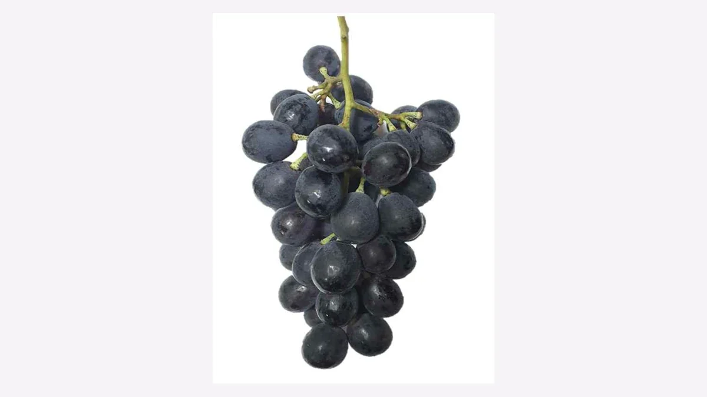

함안 과수시설 현대화｜자부담 50%와 견적서 준비 순서

경북 영천의 포도 재배시설 참고 사진. 함안 지원사업 현장 사진은 아닙니다.
함안군 2027년 과수 고품질 시설현대화사업은 12월 18일까지 신청을 받는 공고입니다. 먼저 내 과원의 사업 대상 여부와 출하 조건을 확인한 뒤 견적을 받으세요. 총사업비를 농가당 지원 한도로 읽으면 자금계획이 크게 어긋날 수 있습니다.
50% 지원은 인정받은 사업비를 기준으로 합니다
공고의 계획 규모는 약 20개소, 총사업비 5억 8,607만 6천원이며 보조 50%·자부담 50% 구조입니다. 이 금액은 사업 전체 규모입니다. 관수·배수시설 등 신청 항목이 지원 대상인지, 견적 중 어떤 비용이 인정되는지는 사업 담당자에게 확인해야 합니다. 2027년 지침과 예산 확정에 따라 내용이 달라질 수 있습니다.
농업경영체 등록만으로 자격 확인이 끝나지 않습니다
과수 경영체 등록 외에 출하약정, 과원 조성 시점, 과거 지원 이력을 함께 봅니다. 공고에는 일정 소득 이상인 경우, 같은 필지·사업을 최근 5년 안에 지원받은 경우, 의무자조금 미납 등 제외 조건이 있습니다. 2024년 12월 31일 이후 조성 과원의 FTA 지원 제한과 재해예방 예외도 있어 필지별 확인이 필요합니다.
| 순서 | 준비할 것 | 먼저 해결할 질문 |
|---|---|---|
| 1. 자격 | 필지·경영체·출하 자료 | 최근 동일 지원 이력이 있는가 |
| 2. 설계 | 배수 문제·시설 위치·면적 | 문제 해결에 필요한 공사인가 |
| 3. 견적 | 같은 규격의 비교견적 | 부대비용까지 비교되는가 |
| 4. 자금 | 자부담·추가비·현금 흐름 | 보조금 지급 전 지출을 감당하는가 |
사업비 2천만원을 가정하면
지원 인정 사업비가 2천만원으로 결정되고 50:50 비율이 적용된다면 보조 1천만원, 자부담 1천만원입니다. 비지원 공사나 추가 비용 200만원이 발생하면 농가가 준비할 금액은 1,200만원이 될 수 있습니다. 이는 계산 예시이며 선정금액이나 지급 시기를 보장하지 않습니다. 선집행 가능 여부를 확인하기 전 계약금부터 보내지 마세요.
견적 두 장의 범위를 같게 맞추세요
원견적과 비교견적에 면적, 관 길이, 펌프 용량, 설치비, 부가세 포함 여부를 같은 기준으로 표시합니다. 가격만 다른 견적은 비교하기 어렵습니다. 출하약정·전년도 출하실적, 경영체 등록, 자조금 납부, 소득 관련 서류도 담당 창구에서 요구 범위를 확인하세요.
작업 전 점검표
- 필지별 자격과 제외 사유를 확인했다
- 지원 결정 전 계약·착공 가능 여부를 문의했다
- 공사 범위와 자부담을 가족·공동경영자와 공유했다
시설부터 고르기보다 과원의 배수·관수 문제와 출하 계획을 적어두면, 견적 상담에서 불필요한 공사를 줄일 수 있습니다.